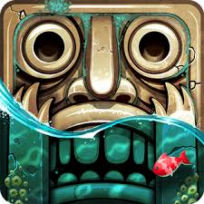

Temple Run 2 is an endless runner video game developed and published by Imangi Studios. A sequel to Temple Run, the game
was produced, designed and programmed by husband and wife team Keith Shepherd and Natalia Luckyanova,[7] with art by
Kiril Tchangov.[7] It was released on the App Store on January 16, 2013,[1] on Google Play on January 24,[2] and on
Windows Phone 8 on December 20.[3] In November 2020 Imangi Studios released Temple Run 2 for the web on Poki.[5]
As of June 2014, Temple Run 2 and its predecessor have been downloaded over 1 billion times.[8]
In January 2018, Temple Run 2 passed over 500 million downloads on the Google Play Store.[9]
